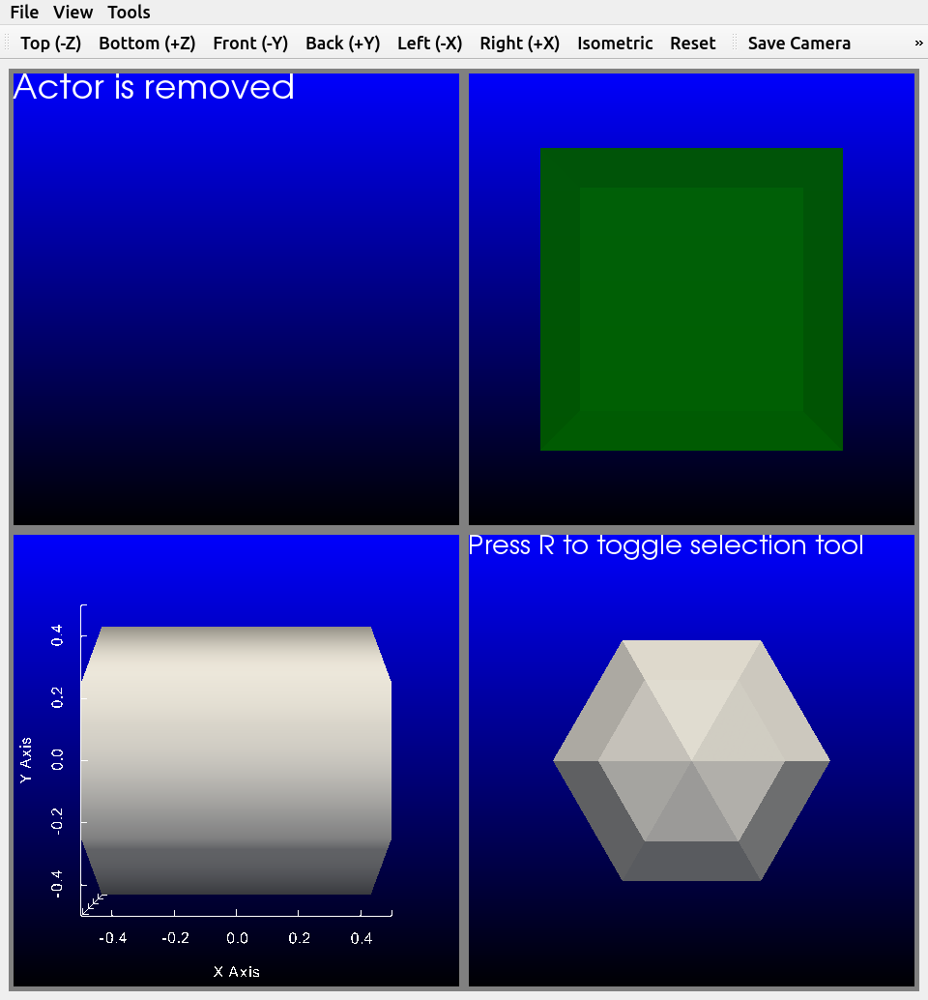

Overview#


The python package pyvistaqt extends the
functionality of pyvista through the usage of Qt.
Since Qt applications operates in a separate thread than VTK,
you can simultaneously have an active VTK plot and a non-blocking Python session.
{kind=link}

pyvistaqt BackgroundPlotter#
Getting Started#
Installation using pip is:
$ pip install pyvistaqt
To install this package with conda run:
$ conda install -c conda-forge pyvistaqt
You can also visit PyPI or GitHub to download the source.
Once installed, use the pyvistaqt.BackgroundPlotter like any PyVista
plotter.
Brief Example#
Create an instance of the pyvistaqt.BackgroundPlotter and plot a
sphere.
import pyvista as pv
from pyvistaqt import BackgroundPlotter
sphere = pv.Sphere()
plotter = BackgroundPlotter()
plotter.add_mesh(sphere)
License#
pyvistaqt is under the MIT license.
However, Qt bindings have licenses of their own.
pyvistaqt uses qtpy to abstract over the underlying Qt binding:
> QtPy is a small abstraction layer that lets you write applications using a single API call to either PyQt or PySide.
This means the Qt binding actually installed at runtime (e.g. PyQt5,
PyQt6, PySide2, PySide6) determines the license obligations
for the Qt layer of your application. Please refer to the
QtPy documentation and the
license of the binding you install to learn more.